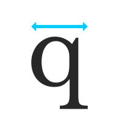
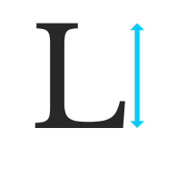
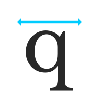
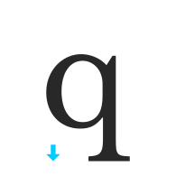
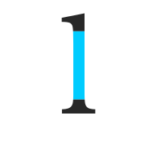
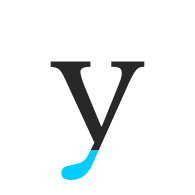
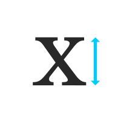

Type Anatomy
-
Aperture
Aperture: The opening of a letterform.

-
Apex
Apex: The highest point of a letterform; where two strokes meet.

-
Arc
Arc: A curved portion of an letter form.
-
Arm
Arm: A horizontal stroke extending from the stem of a letter.

-
Ascender
Ascender: Part of a lowercase letter that extends above the x-height.
-
Ascender Height
Ascender Height: Distance between the x-height and the ascender line.

-
Ascent Line
Ascent Line: Imaginary line indicating the highest character height. This is typically past the cap height.

-
Axis
Axis: Imaginary line through the center of a letterform.

-
Baseline
Baseline: Imaginary line on which characters rest.

-
Beak
Beak: Small, pointed serif at the end of a stroke.
-
Bilateral Serif
Bilateral Serif: Serif with equal thickness on both sides.
-
Body Width
Body Width: Width of a single character.
 -
Bowl
Bowl: Curved enclosure of a letter, like in 'o' or 'b'.

-
Bracket
Bracket: The curve connection on the stem and serif.

-
Cap Height
Cap Height: Height of uppercase letters.
 -
Cap Line
Cap Line: Imaginary line indicating the top of capital characters.

-
Character Width
Character Width: Width of a single character, including spacing.
 -
Counter (Open)
Counter (Open): White space enclosed by a letterform.

-
Counter (Closed)
Counter (Closed): Enclosed space within a letter, like in 'b' or 'd'.
-
Cross Stroke
Cross Stroke: Horizontal stroke across a letter, like in 'A'.

-
Crotch
Crotch: Junction of two strokes like 'y' and 'v'; typically it's on the bottom of the character.

-
Descender
Descender: Part of a lowercase letter extending below the baseline.

-
Descender Line
Descender Line: Imaginary line indicating the bottom of descenders.
 -
Diacritic
Diacritic: Mark above or below a letter, like accents.

-
Ear
Ear: Curved top part of a letter, like in 'g'.
-
Eye
Eye: Central opening of a letter, like in 'e', 'o'.
-
Finial
Finial Ending stroke of a letter, often curved.

-
Foot
Foot: Lower part of a letter, often with a serif.

-
Hairline
Hairline: Very thin stroke in a letterform.

-
Head Serif
Head Serif: Serif at the top of a vertical stroke.

-
Joint
Joint: Connection between strokes and stems in a letterform.

-
Leg
Leg: Descending stroke of a letter, like in 'k' or 'y'.

-
Ligature
Ligature: Combination of two or more letters into a single glyph.

-
Link/Neck
Link/Neck: Connection between bowl and loop in a letter.
-
Loop
Loop: Open curved bottom in a double story letter like 'g'.

-
Overhang
Overhang: Part of a stroke extending beyond the baseline.
-
Serif
Serif: Small projection at the end of a stroke.
-
Shoulder
Shoulder: Curved part of a letter, like in 'h'.

-
Spine
Spine: Main vertical stroke of a letter.

-
Spur
Spur: Small projection at the end of a serif.

-
Stem
Stem: Main vertical or horizontal stroke of a letter.
 -
Stress
Stress: Thicker part of a stroke.

-
Tail
Tail: Descending stroke of a letter, like in 'g' or 'q'.
 -
Tittle
Tittle: Small dot above a letter, like in 'i' or 'j'.

-
Terminal
Terminal: Ending of a stroke in a letterform.
-
Vertex
Vertex: The bottom point where two strokes meet.

-
X-Height
X-Height: Height of lowercase letters without ascenders or descenders.
